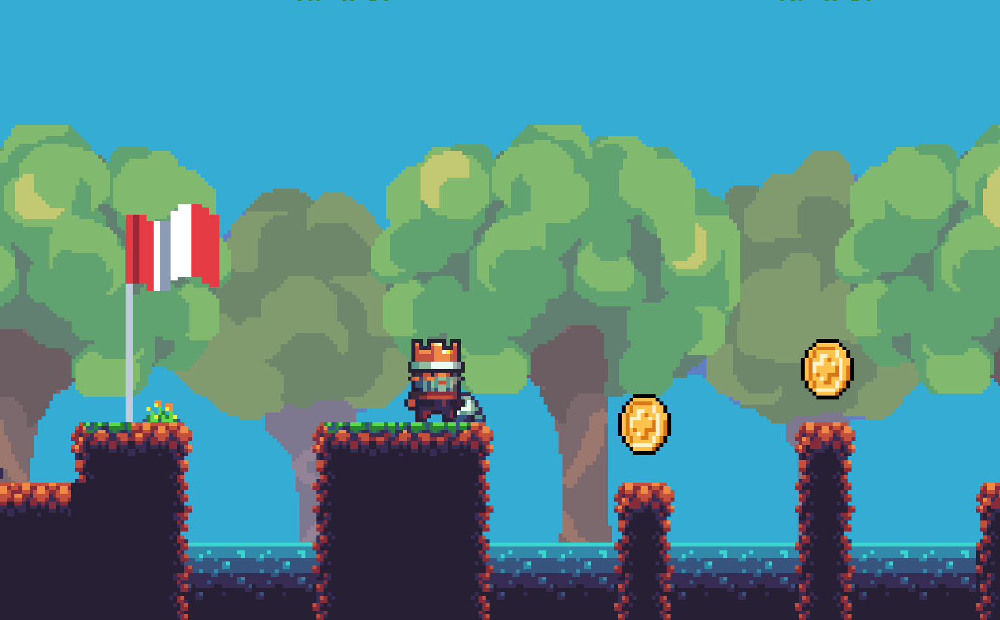
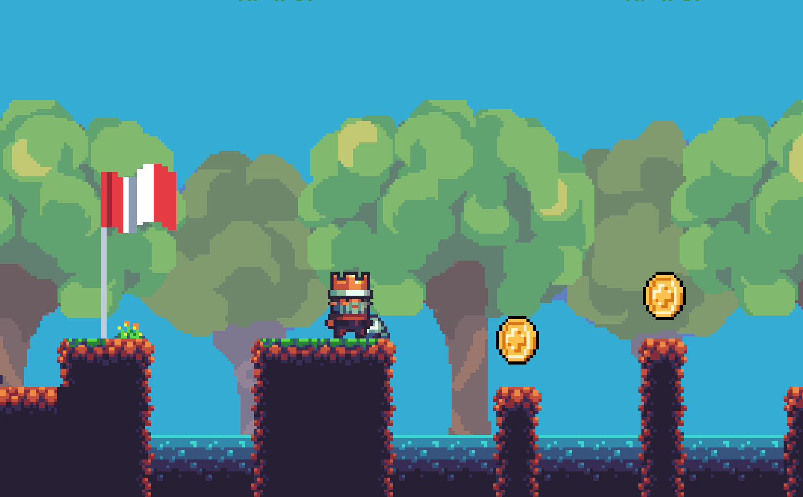

Projet du 1er Semestre de DN MADE : Jeu vidéo 2D en C# sur UnityEngine
Notre but : faire découvrir les points positifs du jeu vidéo aux jeunes de 14-17ans.


Démarche
Pour clôturer le 1er semestre du DN Made Numérique, nous avons reçu le brief de créer un objet ciblant un public âgé de 14 à 17 ans, le sujet étant libre. Avec mon binôme, nous avons décidé de nous concentrer sur les points positifs du jeu vidéo, car les points négatifs sont souvent mis en avant.
Le but est alors de faire découvrir aux jeunes des jeux, des conventions ou encore des événements liés aux jeux pour s'amuser en ligne ou en dehors !

Notre démarche a commencé par de la recherche sur les points positifs, ainsi que des exemples de jeux pour prouver notre point. Nous avons également cherché des articles pour argumenter, des images, etc.
Nous avons ensuite réfléchi au moyen le plus cohérent de diffuser nos idées. Comme nous nous adressons à un public jeune et connecté, un support numérique est pratiquement indispensable. Enfin, puisque nous nous adressons plus précisément à des joueurs ou des personnes qui voudraient commencer à jouer aux jeux vidéo, une expérience de jeu interactive pour présenter notre script nous semblait à la fois intéressante, attractive, cohérente et tendance pour donner envie de l'essayer.
J'ai ensuite commencé à noter tous les éléments de Game Design (comme une barre de vie, des pièces à récupérer, des panneaux à lire, des ennemis, un menu principal...) à inclure pour une expérience à la fois facile, mais aussi intéressante et amusante, tout en gardant à l'esprit le but de notre projet.
Nous avons alors pensé à faire en sorte qu'un point positif des jeux vidéo, comme le développement de la créativité, corresponde à un niveau de notre jeu, avec un gameplay simple qui résonnerait sur ce point (par exemple, créer un escalier ou une maison).

Développement
J'ai utilisé le moteur UnityEngine pour créer le jeu, et appris le C# pour coder des actions et rendre le jeu fluide. Par exemple, intégrer un personnage capable de bouger, sauter et grimper, ajouter un menu pause fonctionnel, des paramètres de volume et de résolution pour une expérience personnalisée et accessible, etc. Bien que notre objet ne soit pas un vrai jeu vidéo, il fallait rendre l'expérience interactive agréable et intuitive, en réfléchissant à tous les problèmes possibles et en apportant des solutions pour les résoudre.


 



J'ai également fait des recherches pour optimiser au mieux le jeu afin qu'il soit le plus accessible possible.
Enfin, j'ai utilisé des assets graphiques réalisés par ma binôme ainsi que par des créateurs sur Internet, en vérifiant qu'ils autorisaient l'utilisation de leurs créations par le grand public. J'ai fait de même pour les musiques, et j'ai veillé à créer une scène de crédits dans le menu principal pour créditer et remercier ces créateurs.